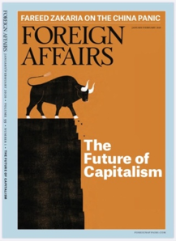

收录于合集

作品简介
【作者】
亨利·法雷尔（Henry Farrell）乔治·华盛顿大学政治学与国际事务教授。他的研究方向主要是信任与合作、欧盟、国际商务和制度理论。
亚伯拉罕·纽曼（Abraham L. Newman）乔治城大学埃德蒙·沃尔什外交学院教授。他的研究方向主要是经济相互依赖和全球化改变国际政治的方式。
【编译】 戴赟（国政学人编译员，波士顿大学）
【校对】 冯毓婧
【审核】 姚寰宇
【排版】 柯晗燕
【来源】
Henry Farrell&Abraham L. Newman, Chained to Globalization: Why It’s too Late to Decouple, Foreign Affairs, 2020 (99) , 70-80.
期刊介绍
期刊简介

《外交》（Foreign Affairs），由美国外交关系委员会(Council on Foreign Affairs)出版，创刊于1922年。根据2018年的期刊引文报告,该期刊的影响因子为4.390，在“国际关系”类别的91种期刊中排名第3。
缚于全球化之上： 脱钩为时已晚
Chained to Globalization： Why It’s too Late to Decouple
内容提要
全球化的世界已经到来，很多人对全球化的到来有着正确的意识，但对世界到底是什么样却没有正确的认识。全球化没有像人们期待地那样，让政府和企业变得随心所欲，而是将它们紧紧地束缚在了一起。随着数字网络，资金流动和生产供应链遍及全球，各国（尤其是美国）开始将各方视为捆绑另一方的一张网。 简而言之，全球化已不 是放开束缚，走向自由的力量，而是安全隐患，大国竞争和权力控制的新来源。全球化所带来的新枷锁使得通往自由的路径变得更少。
**
**
文章导读
一、导论 ****
1999年，专栏作家托马斯·弗里德曼（Thomas Friedman）宣称冷战时代的地缘政治格局已经结束。 他提到：“这个世界的系统已由原来围墙隔绝的构造逐步变成缠绕连结的网络。”随着众多企业的追盈逐利，大国强权主导世界的色彩逐渐消逝。一个和谐共生的时代即将来临，各国在这个时代中并不会顾虑各自实力的此消彼长，而会更多地忧心如何对市场进行支配。各国都将全球产业链中的关键环节为己所用，均希望自己在竞争中棋高一筹。在过去的几年中，中美两国的较量是最显而易见的了。它们认识到相互依赖是多么危险，并为此疯狂地寻求解决之策。但是，中美之间的经济交织相连是何等之深，想要不伤筋动骨地断其联系、脱其挂钩是何其之难。两国在脱钩后都没能力实现经济上的自给自足。中国和美国的鹰派或许会探讨一场新的冷战，但是，当今之国际格局已无法将世界分裂成两个平行竞争的集团。尽管，各国利益的盘根错节可能会滋生危险因素，但正因如此，而塑造了一个新的时代，称之为“被缚的全球化”时代（chained globalization）。 在“被缚的全球化”下，国家相互依赖、相互交织也相互束缚，这便促使各国通过经济威胁和间谍活动来扼杀竞争对手以求胜出，即使它们的对手也会做相同的尝试。 在某些方面，被交织束缚的全球化反而显得先前的冷战格局异常简单。当时的西方阵营和苏联阵营在经济上几乎鲜有联系之处，因此也不会存在经济胁迫。双方的决策者在当时意识到了核武器的存在与威胁并通过军控谈判的方式进行战略武器的限制。相比之下，如今的局面更为复杂。世界大国正陷入于它们尚未完全了解的金融、贸易、信息网络之中，处事稍有不慎可能会铸成大错，引发风险。对此，接受和了解被缚全球化的真实面貌是防范其中风险的首要前提。政策制定者们对孤立脱钩抑或是良性整合都不能抱有太多幻想。不管美国对此顺心与否，它与其竞争对手的利益是紧紧捆绑在一起的，既然无法割断这些联系，那就必须学会运筹帷幄其中，决胜千里之外。
** 二** 、瓶颈与障碍 ****
几十年来，评论员一直将全球化理解为市场自由的自然延伸。 然而，在某种程度上，国际经济网络的形成也会导致分歧，这种分歧主要来自受益于开放市场的团体和反对开放市场的团体之间。这样的逻辑思路忽略了一个事实， 即全球化本身也将引发新的冲突。 随着世界经济和信息网络的扩展，许多国家会在网络系统中找寻一个交汇的枢纽，并利用这些枢纽反攻竞争者。 最早进行这种枢纽转换的网络之一是国际金融交易系统。在20世纪70年代，环球银行间金融电信协会（Society for Worldwide Interbank Financial Telecommunication, SWIFT）让世界各地之间的银行交易变得更加容易，并且美元结算系统使得银行可以应付美元挤兑。一旦银行和个人都接受了这种交易系统，国际汇兑便会更加依赖美元，从而促成美国在全球金融体系中有了更多的杠杆运筹。随后进行枢纽转换的是国际供应链。在20世纪80年代至90年代间，电子产业制造商开始将生产工作外包给供应商如富士康等公司，从而建立了具有数十甚至数百名供应商的供应链。之后，在21世纪的前10年，云计算开始将网络系统中的关键核心功能云集于亚马逊和微软等大公司中。在上述的每一种情况里，金钱、商品和资讯都会通过必要的经济枢纽传递。一些优势大国可以驾驭这些枢纽，从而有机会排挤或者监视他国。由于拥有众多网络系统，美国比其他大多数国家提前看到上述机遇。自2001年的9·11事件以来，美国财政部利用全球对美元的依赖，将全球金融体系转变为一种控制机制。美国曾冻结基地组织等其所谓的“流氓”组织或国家的资金链，并利用制裁威胁等手段恐吓相关银行以实现其目标。美国国家安全局通过秘密程序利用AT&T和Verizon等电信运营商的网络来监控全球通信设备，并利用此对抗对手和敲打盟友。直到最近，其他国家才奋起直追。以中国为例，作为全球化的后起之秀，美国很难将其拒之门外。另外，欧盟也在全球经济网络中发挥了重要作用，但它缺乏类似于美国财政部外国资产控制办公室（U.S.Treasury Department’s Office of Foreign Assets Control）这样的中央机构，以至于欧盟不能像白宫那样将经济网络系统转变成权力工具。在恐惧和机会主义的共同驱动下，中国目前正在使其自身免受网络化的攻击，并建立自己主导的体系以对抗其竞争对手。以华为为例，它寻求在北京的默认支持下建立世界5G通信网络。如果华为在全球5G领域占据主导地位，中国政府可以利用其在通信网络上的实力对抗竞争对手，通过与华为的联系来运筹全球通信。换言之：中国也许可以美国之道还治美国之身。因此，这也阐明了为何华盛顿方面如此歇斯底里地希望挫败华为雄心。特朗普政府禁止华为进入美国市场，游说美国盟友回绝该公司的5G基础设施，并禁止美国公司向华为出售在其他地方无法轻易获得的先进半导体晶片。中国政府对此种举动做出回应，威胁出台“不可靠实体清单”，联邦快递、英国汇丰银行等公司可能会在其列。虽然，特朗普与北京方面达成了一定的贸易协议，但美国国会的两党联盟可能会试图破坏已达成的协议。欧洲也被卷入了这场经济网络的争夺战中，部分源于美国对伊朗的敌对行动。自2018年美国退出伊核协议以来，美国利用美元结算系统的主导地位限制伊朗获得全球金融资源并威胁要制裁与伊朗有业务来往的欧洲公司。欧洲各国政府因此担心，美国的这些措施可能是美国进行更大范围威逼胁迫的前奏。毕竟，对欧洲来说，接受美国孤立伊朗而使欧洲损失的成本远比迫使欧洲与俄罗斯脱钩小得很多。一些小国家也加入进了经济网络的竞争之中。韩国法院对第二次世界大战期间日本公司非法用工的行为进行苛责，这一行为激怒了日本。日本政府扬言在2019年7月限制相关专用化学品对韩国大型公司的出口，从而扼杀韩国的科技产业。作为反制措施，韩国政府声称要停止出口每年冬天日本家庭和企业都赖以生存的取暖油。 这些争端表明，在全球供应链中，对关键枢纽的把握程度导致了不对称的相互依赖，而不对称的相互依赖会产生权力，有权力就能更好地掌握全球供应链。
**
**
三、连锁反应
在这样的背景下，一旦出现错误决策便会引发事态升级，甚至会导致国家间相互怀疑产生敌意。 如果某国政府错误地针对全球产业中的某个关键公司，可能会造成一连串的经济损失，其他国家可能会采取报复措施予以反击。 随着全球网络的形成，这种危险引发的频次也会增加 。 因此，各国通过斩断自己与全球网络的联系使自己摆脱全球化的束缚也就不足为奇了。美国评论员认为与中国经济脱钩，会使某种依赖关系破裂。中国现在正在对本土半导体产业投入大量资源，以使其免受美国威胁。韩国也在尝试建立自己独立的化工部门，以减轻对日本的依赖。与此同时，俄罗斯正在着手一项看似不切实际的项目，即“主权互联网”（sovereign Internet）计划：该计划可以防止外国人的渗透干预并让莫斯科监控其国民通讯。从一些领域来看，一定程度的隔离可能会奏效。比如，在国防采购方面，各国可以通过改变采购路线来弱化间谍和破坏活动,从而增强国防自主权。美国早已在这方面做出改变从而预防中国冲击美国军事地位。另外，美国的盟国也会紧随美国的一些公司切断与中国人民解放军军用物资供应链的联系。然而，现实世界中，除非发生全面战争，各国政府会发现根本无法重新打造全球化之前各国经济独立且盛行全球的繁荣景象。毕竟，当今世界各国不仅需要全球金融系统、制造供应链和信息网络，它们还依赖于此。美国政府或许可以重塑其军事采购链，但却不能重塑当今时代的经济模式。若美国执意如此，将会遇上巨大阻力和经济乱象，因为这会彻底颠覆业已形成的整个产业链以及大大推升居民消费成本。
四、剪不断的联系 ****
与其退出全球网络系统，美国不如学会如何在全球网络中生存下去。这样做可以赋予美国新的权力，但同时产生极大的脆弱性。 美国的政策制定者们需小心驾驭美国主导的金融体系，若将其竞争对手围困于此金融系统中或是鼓励对手摆脱本国金融控制，都会引起反作用。
华盛顿若因一时之利而让全球网络朝向己方，反而会增加风险。为避免此类短视情况，政策制定者不仅需要了解全球网络的功能，还需要了解每个网络是如何相连的。另外，由于政府机构，国际组织和企业零散地分布于此网络中，美国政府必须花费心思将其串联。在新自由主义兴起、越来越多的观点支持市场自主运行而反对监督和监管的情况下，更需要美国政府对近几十年来日益萎缩的联邦官僚机构进行大量的投资。政府的总目标应该是打破经济和安全问题之间的传统障碍。例如，可以扩大商务部的职能以处理安全问题，或者五角大楼可以涉猎国防工业事务以外的私营部门。国会方面可以重建其技术评估办公室，以研究新兴技术及其管理方法。最后，政府应建立专门机构来研究与特定网络（例如全球供应链）相关的威胁，并使政府和私营部门的信息贯通。
接下来，政府监管机构将不得不比之前几十年更深入地干预经济。华盛顿方面已经通过对美国外商投资委员会（Committee on Foreign Investment in the United States, CIFUS）进行有效的程序改革，该程序研究了外国资本流入美国的相关安全隐患。2018年，国会通过了两党立法，要求商务部重新评估包括人工智能和机器学习在内的各种高科技领域公司的许可要求。国会还推动特朗普政府恢复长期休眠法，该法要求美国官员确认中国军用公司和集团在美国的运营情况。其他国家政府也正以首府华盛顿马首是瞻，比如欧盟正在制定自己的法律程序来审查外国投资，一些欧盟官员也正在对欧盟与中国在敏感技术领域（如国防技术，能源基础设施，传媒和通信）方面施加限制的方案予以辩论。
但是，仅仅审查外国投资是远远不够的。美国监管机构还应努力保护国内敏感性市场免受外国剥削。在某些部门，华盛顿方面需要限制对可信组（trusted groups）的访问。政策制定者可以设置重重门槛限制美国对手利用社交媒体来破坏美国的政治系统。在其他情况下，政府还需更有远见，通过在该国关键基础设施（例如电信，电力和供水系统）建立重复组件，帮助这些设施网络免受外部攻击。
最后，政府需要采取新型对话方式。在冷战期间，苏联和美国建立共同用语（shared vocabulary）来避免危机，它们互相借鉴了各个领域的学者的著作，这些学者提出了“确保相互摧毁”（mutual assured destruction）和“第二次打击威慑”（second-strike deterrence）等概念。今日，中国、美国、欧盟和其他大国也需如此，像冷战时期一样，学者们可以在建立新的共同用语方面发挥重要作用。然而，学者们要想做到发挥关键作用，还需突破学科间的界线，专注于经济和安全问题的焦点，并进行全球协作的技术专家合作。大多数美国国内国家安全专家对支撑全球网络的基础结构了解甚少。如果他们能与技术工程师一起了解这些系统，那么全球网络的保护将易如反掌。
五、缓和紧张 ****
通用语言是走向通用规则的第一步。 制定这样的规则并非易事，因为网络冲突的后果混乱不堪且无法预测。冷战的隐性规则（tacit rules）主要是由政治家、军方领导人和核物理学家制定的，这些隐性规则在二十一世纪必然会涉及到更多、更广泛的行为体的参与，不仅包括国家，还包括非政府组织和跨国公司。
各国政府均应谨慎对待他方的网络枢纽，例如环球银行间金融电信协会（SWIFT）或世界电信系统的主要枢纽。掌握这些枢纽就像控制核武系统一样，国家将会拥有巨大的进攻和防御性力量。因此，美国会将中国利用华为重新建立全球电信控制的努力视为一种挑衅。
对美国来说，美国需要认识到其将世界金融和信息网络武器化的尝试会威胁其他国家，并应缓和其行为。保持克制不仅可以促进国际社会的稳定，也符合美国自身的利益。美国决策者应该牢记，他们的惩罚性措施可以促使各国摆脱华盛顿控制下的网络，这会削弱美国在全球网络中的杠杆作用。
唐纳德·特朗普总统于2019年10月声称，如果土耳其军队以不明方式越过并入侵叙利亚东北部，美国便会通过金融和关税制裁“摧毁土耳其经济”。对此，土耳其已经开始将一些国际金融交易与美元结算系统隔离开来，并通过靠拢俄罗斯来代替环球银行间金融电信协会（SWIFT）的影响，为土耳其的经济奠定基础。然而，即使特朗普的威胁会迅速撤消，土耳其领导人依旧感到不安——他们担心美国国会可能会敦促采取更实质性的、更持久的制裁措施。尽管土耳其或其他中等强国可能不会切断与美国主导下的金融体系的联系，但他们仍然可以说服其银行摆脱华盛顿的网络控制。美国不能运用类似的政策对付中国、俄罗斯这样的大国，因为这些国家不仅能在经济措施上对美国进行反制，还能对美国做出有效的军事打击。
各国均应努力使其决策透明化和可预测。处于核时代的今天，信号不明可能会导致灾难性后果。 美国最近无法判定对伊朗的制裁是否意味着改变伊朗的行为方式或使得该政权中的激进份子以威胁地区航道和美国盟友来达到报复目的。为了防止误判的升级，美国和其他大国应该运用类似于“美国外商投资委员会”（CIFUS）的基础规则结构来决定何时使用进攻或者防御策略，并清楚地传达这些政策信号。
美国还必须避免对其他国家为减少他们在全球化束缚中的脆弱性的行为而过度反应。比如，中国在半导体产业中的大量投资，俄罗斯发展全球金融网络的替代品，欧盟努力将自己与美国的过度扩张隔离开来等行为。华盛顿方面对此必须意识到，当其他国家在国际环境中感受到安全，美国才会因此获益。
核时代下的经验教训是，即使危险尚存但也并不意味着国际社会的瘫痪。实际上，即使美国在全球化中已经获利，但谨慎细心的计划依旧能助力美国在“被缚的全球化”下妥善地应对风险。否则，美国会陷入一个非常危险的境地——美国的利益可能不仅会被经济相互依赖的环境紧紧缠绕，甚至还会因此窒息。
译者总结
在本文中，作者以当今的时代主题——“全球化”为背景，提出自己对全球化下世界格局的新视角，认为全球化下，世界各国即相互依赖又相互束缚。
作者从全球化下的危机与障碍、联系与反制、紧张与缓和的视角，阐述在盘根错节的全球化下，美国需对此如何应对。作者通过分析当下中国、俄罗斯等大国的行为情况，解释美国与中等强国如土耳其、伊朗的关系，提出美国相应的应对策略。作者认为，美国若想在全球化中依旧保持其主导地位需在各国相互交织，相互束缚的情况下， 通过认识全球网络的枢纽与束缚，了解各国的情况与心理状态，在与各国打交道的过程中找到适当的平衡点使美国获得一条适合自己的生存之道。
本文由国政学人独家编译推荐，文章观点不代表本平台观点，转载请联系授权。


国政学人
支持学术公益与知识传播
微信扫一扫赞赏作者 __赞赏
已喜欢，对作者说句悄悄话
取消 __
发送给作者
发送
最多40字，当前共字
上一页 1/3 下一页
长按二维码向我转账
支持学术公益与知识传播
受苹果公司新规定影响，微信 iOS 版的赞赏功能被关闭，可通过二维码转账支持公众号。